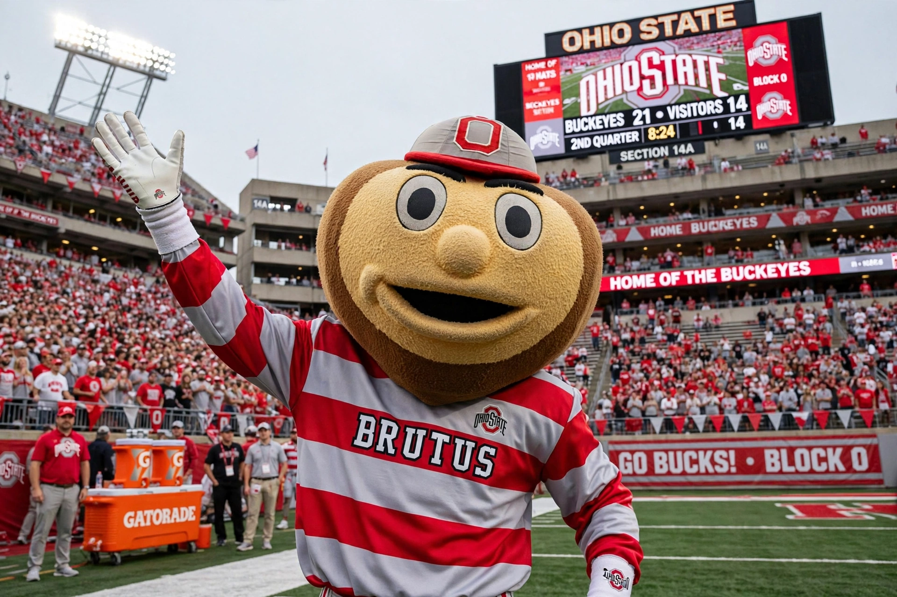

 Brutus Buckeye at Ohio Stadium | |
| University | Ohio State University |
|---|---|
| Conference | Big Ten |
| Description | Anthropomorphic buckeye nut |
| First seen | 1965 |
| Origin | Student contest, Ohio State University |
Brutus Buckeye is the athletics mascot of Ohio State University and a beloved symbol of the school. Brutus is an anthropomorphic representation of a buckeye — the nut of the Ohio buckeye tree, the state tree of Ohio — wearing the Buckeyes' scarlet and gray uniform. The mascot appears at Ohio State sporting events and university functions, and is portrayed by students selected through tryouts.
The buckeye had been associated with Ohio State athletics since the school adopted "Buckeyes" as its nickname, but the university lacked a costumed mascot until 1965, when students Ray Bourhis and Sally Huber proposed creating one. A campus-wide contest chose the design — originally a papier-mâché buckeye head worn over the body — and the name "Brutus" was selected in a follow-up contest.
The original fiberglass head was heavy and awkward; the costume evolved over the decades into the modern, more athletic form with a smaller head and a full uniform. Brutus was among the original inductees of the Mascot Hall of Fame's collegiate division and remains one of the most recognizable mascots in American college sports.
Brutus performs push-ups after Ohio State scores at football games, leads the crowd in cheers, and appears alongside the Ohio State University Marching Band. Students who portray Brutus keep their identities secret until a reveal at the end of their tenure, a tradition shared with many collegiate mascots.